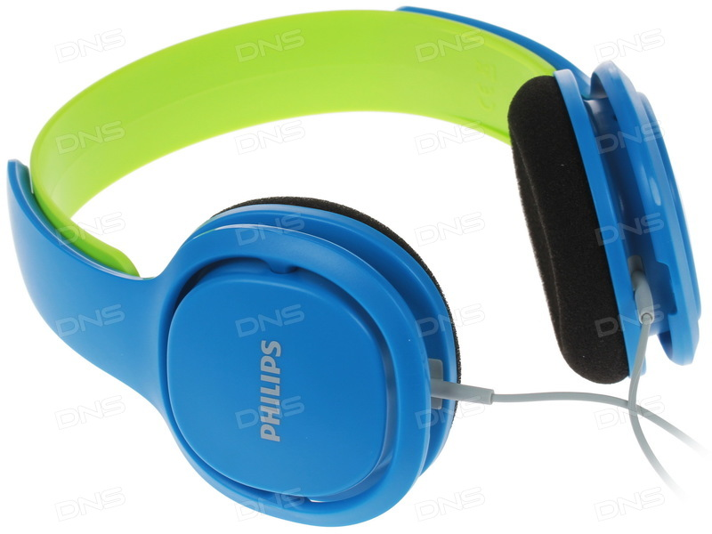

PHILIPS SHK2000BL/00
Описание товара
 Philips SHK2000 - специально разработанные для детей наушники с ограничителем громкости. Мягкие амбушюры, регулируемое оголовье.
Надежная конструкция выполнена без использования креплений, что позволяет легко выдвигать и устанавливать на место детали наушников.
Характеристики товара
- Тип наушников - полузакрытые
- Цвет - blue-green
- По дключение - проводное
- Максимальная мощность - 40 мВт
- Чувствительность - 99 дБ
- Номинальное сопротивление - 32 Ом
- Вес - 100 г
Технические характеристики товара
| № | Характеристика | мин | макс | |
| 1 | Технические | Мощность | 20 мВт | 40 мВт |
| 2 | Чувствительность | 50 дБ | 99 дБ | |
| 3 | Сопротивление | 20 Ом | 32 Ом | |
Подробное описание товара
Удобное регулируемое оголовье для растущих детей
Удобное оголовье можно полностью регулировать, что обеспечивает удобную посадку для детей любого возраста.
32-мм излучатели с неодимовыми магнитами обеспечивают хорошо сбалансированное звучание
Неодим является наилучшим материалом для создания сильного магнитного поля, что улучшает чувствительность звуковой катушки, усиливает низкие частоты и обеспечивает качественное сбалансированное звучание.
Надежная конструкция без креплений выдерживает любые испытания
Надежная конструкция выполнена без использования креплений, что позволяет легко выдвигать и устанавливать на место детали наушников.
Мягкие амбушюры обеспечивают надежную и удобную посадку
Чашки наушников имеют мягкие насадки из вспененного материала для максимально комфортной и надежной посадки.
Ультралегкое оголовье для максимального комфорта
Тонкое ультралегкое оголовье обеспечивает максимальный комфорт даже при длительном прослушивании в течение нескольких часов. Наушники настолько удобны, что ребенок может даже совсем забыть о них.
Ограничение максимальной громкости до 85 дБ для безопасного прослушивания музыки
Наушники для детей настроены на ограничение громкости до 85 дБ, поэтому вы можете быть уверены, что ваш ребенок слушает музыку с безопасным уровнем громкости.
Шумоизолирующие амбушюры для четкого звучания при любой громкости
Шумоизолирующие амбушюры значительно сокращают уровень внешнего шума — ребенку не потребуется увеличивать громкость для погружения в музыку.